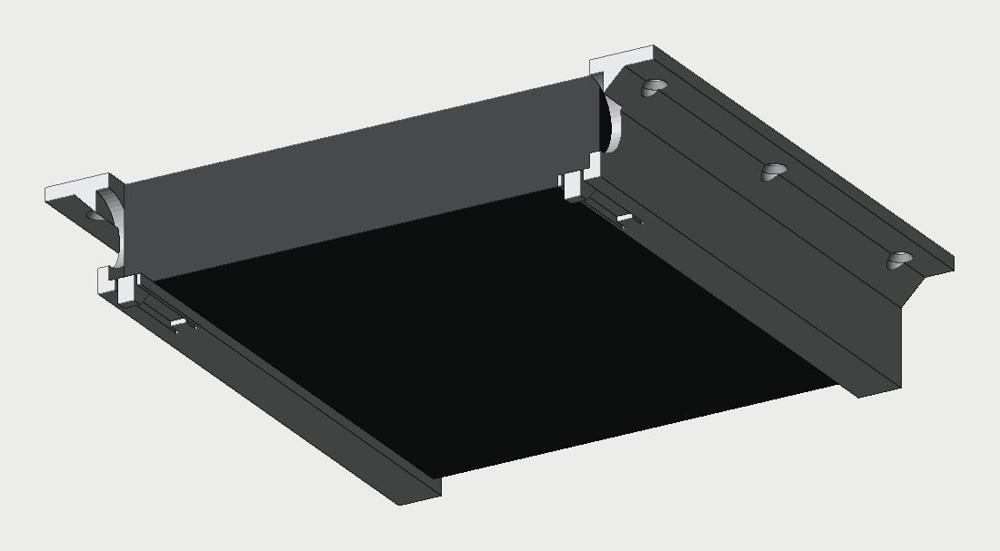
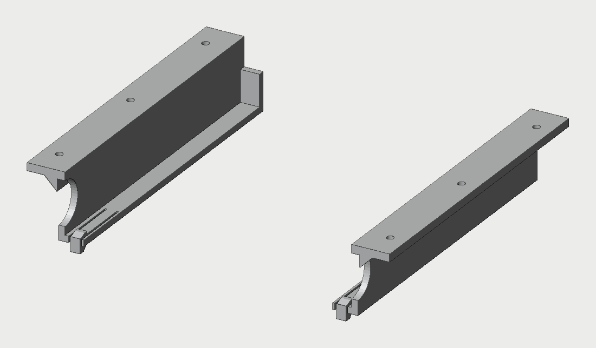
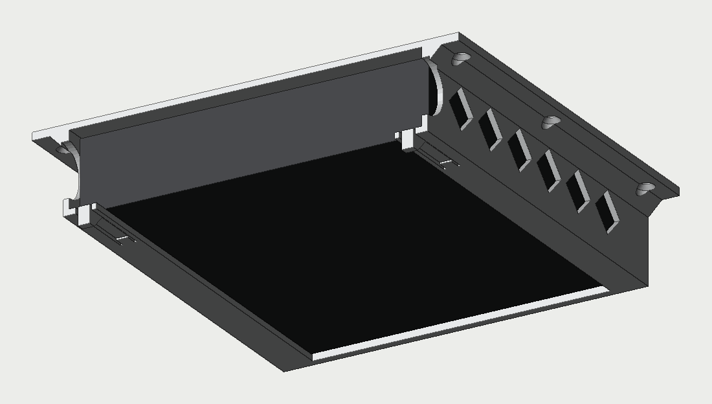
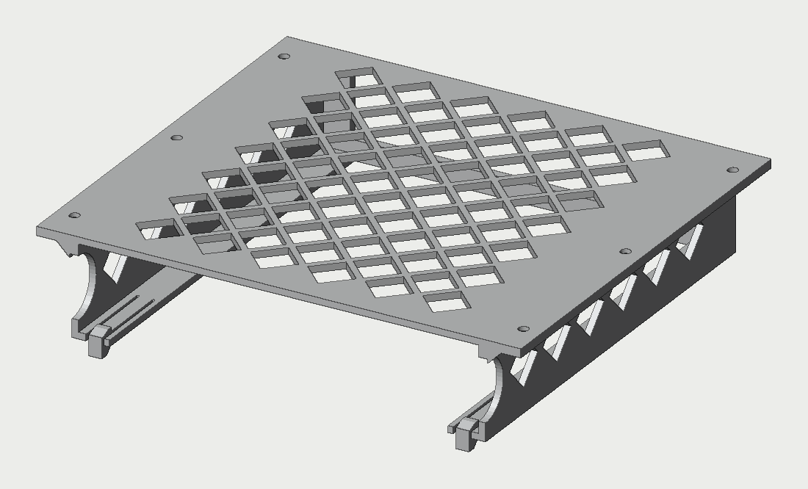
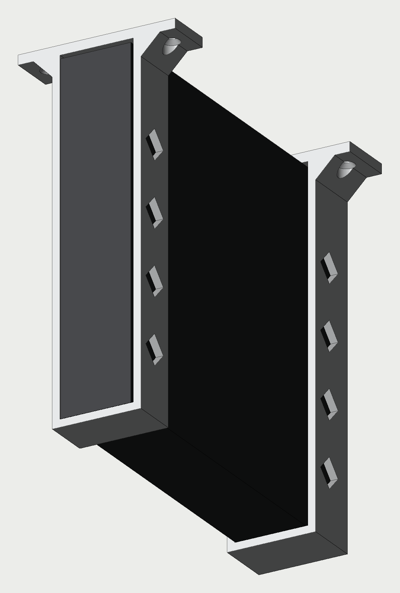
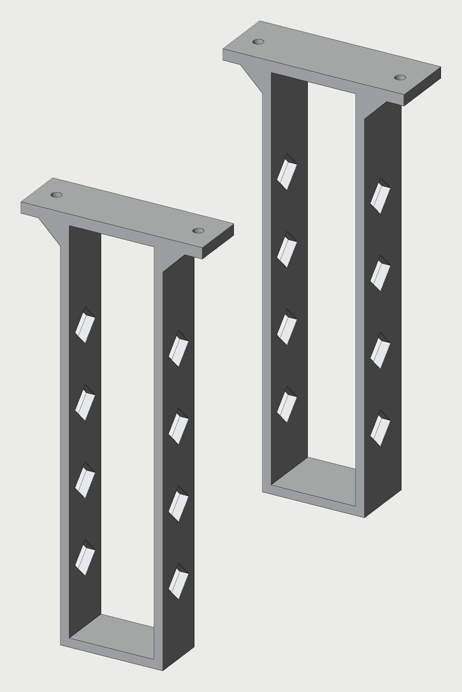

Lenovo ThinkCentre M720q Tiny · 179 × 183 × 37 mm · Home Assistant
Mini-pc'en under bordet, skruet fast og nem at tage ud
Tre måder at hænge Home Assistant-maskinen op under skrivebordet. I alle tre glider pc'en ind forfra og kan tages ud uden værktøj. Holderen skrues op i bordpladen med 4 mm undersænkede træskruer. Bagsiden er åben, så kablerne kan sidde i.


Set nedefra med pc'en · skinnerne alene
Skinner to dele
To skinner med en læbe, som pc'en ligger på. Pc'en skubbes ind forfra, til den rammer stoppet bagtil, og så klikker en fjedertunge op foran den. Træk tappen under tungen ned, så kan pc'en trækkes ud. Siderne er åbne, så der er mest luft.
Under bordet
229 mm bred, 196 mm dyb, hænger 43 mm ned
Skruer
6 (3 pr. skinne)
Ind / ud
Klik-lås foran
Print
Ca. 13 t, 113 g. Står op med bagenden nedad
Pas på
Afstanden mellem skinnerne skal passe. Skru den ene fast, og sæt den anden med pc'en imellem


Set nedefra med pc'en · kappen alene
Kappe én del
Én samlet kappe, der omslutter pc'en på siderne og foroven. Bunden er åben på midten, og loft og sider har rudehuller, så varmen kan slippe ud. Klik-låsen er den samme som i Skinner. Det er den mest færdige løsning, og der er ingen afstand at måle.
Under bordet
219 mm bred, 196 mm dyb, hænger 45 mm ned
Skruer
6
Ind / ud
Klik-lås foran
Print
Ca. 21 t, 167 g. Står op med bagenden nedad og fylder næsten pladen
Pas på
Længste print. Skal passe første gang


Set nedefra med pc'en · bøjlerne alene
Lodret to dele
Pc'en står på højkant i to U-bøjler, som hænger fra bordpladen. Den fylder kun 8 cm i bredden og kan sidde helt ude ved et bordben eller en væg. Den bageste bøjle har en kant, som pc'en stopper mod. Der er ingen lås, men pc'en hviler med sin egen vægt i bøjlerne.
Under bordet
83 mm bred, 187 mm dyb, hænger 190 mm ned
Skruer
4 (2 pr. bøjle)
Ind / ud
Glider ind forfra, ingen lås
Print
Ca. 11 t, 97 g. Ligger fladt, hurtigst
Pas på
Hænger langt ned, så den skal sidde, hvor knæene ikke rammer
Findes allerede
Lenovo Tiny PC Under Desk Mount (MakerWorld): en enkel bøjle til M710, M720, M910 og M920. Pc'en står på sine gummifødder, og der er stop bagtil. Forfatteren printede den i ASA.
Lenovos eget beslag (0B47097, Tiny Under Desk Mount Bracket) kan købes. Det er ikke bekræftet, at M720q står på listen over modeller, det passer til.
Til valget
Materiale: PLA kan bruges, for pc'en bliver kun lunken. PETG holder bedre, hvis pc'en sidder lige over en radiator, eller hvis læben skal bære i mange år.
Skruer: 4 mm undersænkede træskruer, fx 4 × 16 mm til en bordplade på mindst 18 mm. Hullerne er Ø 4,5 mm med undersænkning nedefra.
Mål: pc'en er 179 × 183 × 34,5 mm, 37 mm med gummifødder. Der er 1 mm luft på siderne og 1,5 mm over pc'en, så fødderne kan blive siddende.
Strømforsyningen er ikke med i forslagene. Den kan få sin egen lille holder ved siden af.